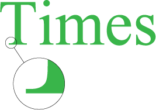

Шрифты
Существуют тысячи шрифтов, которые предназначены для оформления текстов. При этом следует отметить, что число шрифтов, применяемых для набора текста на сайтах, существенно ниже. Конечно, ничто не мешает выбрать и задать, например, для заголовка, вычурный шрифт, установленный на локальном компьютере. Но если такого шрифта на компьютере пользователя нет, то текст будет отображаться шрифтом, установленным в браузере по умолчанию. Получается, что усилия разработчика пропадут даром. Есть три способа избежать этого.
- Создать надпись в графическом редакторе и вставить её на веб-страницу как изображение. Этот метод подключает всю мощь графических систем по управлению текстом, при этом допустимо включать любые шрифты. Из недостатков самый главный состоит в том, что рисунок так просто не изменишь, и придётся вновь обращаться к редактору. Так что рисунки в качестве текста применяются только для создания небольших и постоянных надписей вроде заголовков.
- Загрузить пользовательский шрифт. Действительно, если можно загружать по сети изображения, почему бы то же самое не проделать и со шрифтами?
- Воспользоваться стандартными шрифтами, встроенными в браузер и операционную систему. Этот способ является пока наиболее распространённым для указания шрифта на веб-странице.
Всё многообразие шрифтов (несмотря на то, что они совершенно разные по виду и форме) можно поделить на определённые группы: шрифты с засечками, шрифты без засечек, моноширинные и декоративные шрифты.
Шрифты с засечками
Такие шрифты характеризуются засечками — поперечными элементами на концах букв, которые называются ещё серифами (serif) (рис. 1).

Рис. 1. Текст, в котором используется шрифт с засечками
Засечки придают шрифту черты рукописных текстов, словно написанных пером, хотя современные виды шрифтов с засечками в большинстве своем уже не несут в себе следов каллиграфии.
Шрифты с засечками активно применяются для набора основного текста, поскольку это облегчает восприятие больших объемов текста. Засечки заставляют взгляд читателя скользить вдоль них и одновременно разделяют отдельные буквы, чтобы они не сливались между собой. Также такие шрифты могут использоваться и для написания заголовков. На экране монитора при уменьшении размера текста шрифт с засечками начинает хуже передавать начертание, поэтому для мелких надписей рекомендуется воспользоваться шрифтом без засечек.
Шрифты без засечек
Шрифты без засечек, называемые также гротесками или рублеными шрифтами, не имеют серифов на концах букв, поэтому для их обозначения используется термин sans-serif (в переводе с французского — «без серифа»). На сайтах подобные шрифты нашли применение в самых разнообразных элементах: заголовках, надписях на кнопках форм, основном тексте и т. д. Преимущество шрифта без засечек состоит в том, что он одинаково хорошо передаёт текст как в крупном, так и в мелком начертании (рис. 2).

Рис. 2. Текст со шрифтом без засечек
Следует понимать, что удобочитаемость текста зависит от множества факторов, которые определяются шрифтом, разрешением и размером монитора, настройками системы, длиной строки и т. д. Поэтому решение о выборе шрифтов с засечками или без можно сделать только исходя из готового макета веб-страницы.
Моноширинный шрифт
Все символы моноширинного шрифта имеют одинаковую ширину, независимо от начертания буквы отводимое под неё пространство не меняется (рис. 3).
Рис. 3. Текст с моноширинными символами
Такой подход имеет как преимущества, так и недостатки. Из достоинств следует отметить то, что текстом удобно манипулировать, если требуется точно разместить одну надпись под другой. Благодаря тому, что символы выступают в роли кирпичиков одинаковых размеров, можно строить из них целые текстовые картины. Такого рода искусство до сих пор популярно, и подобные «изображения» встречаются порой в Интернете.
Опять же в силу того, что все символы одинаковы по ширине, это накладывает отпечаток на комфортность чтения текста. Понятно, что хотя буквы «Г» и «Ш» могут быть равными по размеру, это приводит к излишнему растягиванию символов, что идёт в ущерб их красоте и элегантности.
Что касается применения моноширинного шрифта на сайте, то обычно он используется, когда требуется привести код программы. Добавляя пробелы перед строками, их можно выравнивать между собой, а это позволяет лучше ориентироваться в коде.
К моноширинным шрифтам, применяемым на сайтах, относится шрифт Courier и его разновидности.
Декоративные шрифты
Эту категорию составляют шрифты, не вошедшие в предыдущие описания. Подобные шрифты используют для создания определённого настроения на сайте, поскольку в большинстве своем они трудны для восприятия и чтения. Наиболее часто декоративные шрифты применяются для заголовков, текстовых выделений и, как правило, никогда для основного текста (рис. 4).
Рис. 4. Декоративный шрифт
В Windows для размещения на сайте обычно применяется декоративный шрифт Comic Sans MS.
См. также

Все материалы сайта доступны по лицензии Creative Commons «Attribution-NonCommercial» («Атрибуция — Некоммерческое использование») 4.0 Всемирная, если не указано иное.